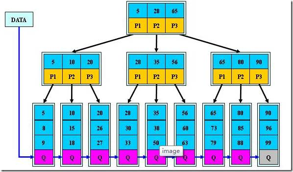

分布式唯一ID极简教程
所有的业务系统，都有生成ID的需求，如订单id，商品id，文章ID等。这个ID会是数据库中的唯一主键，在它上面会建立聚集索引！
ID生成的核心需求有两点：
全局唯一
趋势有序
著名的例子就是身份证号码，身份证号码确实是对人唯一的，然而一个人是可以办理多个身份证的，例如你身份证丢了，又重新补办了一张，号码不变。
问题来了，因为系统是按照身份证号码做唯一主键的。此时，如果身份证是被盗的情况下，你是没有办法在系统里面注销的，因为新旧2个身份证的“主键”都是身份证号码。
也就是说，旧的身份证仍然逍遥在外，完全有效。这个时候，还好有一个身份证有效时间的东西，只有靠身份证有效期来辨识了。不过，这就是现在这么多银行，电信诈骗的由来，捡到一张身份证，去很多银行，手机，酒店都可以使用！身份证缺乏注销机制！
所以，经验告诉我们。不要相信自己的直觉，业务上所谓的唯一往往都是不靠谱的，经不起时间的考研的。所以需要单独设置一个和业务无关的主键，专业术语叫做代理主键（surrogate key）。
这也是为什么数据库设计范式，唯一主键是第一范式！
以mysql为例，InnoDB引擎表是基于B+树的索引组织表(IOT)；每个表都需要有一个聚集索引(clustered index)；所有的行记录都存储在B+树的叶子节点(leaf pages of the tree)；基于聚集索引的增、删、改、查的效率相对是最高的；如下图：

如果我们定义了主键(PRIMARY KEY)，那么InnoDB会选择其作为聚集索引；
如果没有显式定义主键，则InnoDB会选择第一个不包含有NULL值的唯一索引作为主键索引；
如果也没有这样的唯一索引，则InnoDB会选择内置6字节长的ROWID作为隐含的聚集索引(ROWID随着行记录的写入而主键递增，这个ROWID不像ORACLE的ROWID那样可引用，是隐含的)。
综上总结，如果InnoDB表的数据写入顺序能和B+树索引的叶子节点顺序一致的话，这时候存取效率是最高的，也就是下面这几种情况的存取效率最高
使用自增列(INT/BIGINT类型)做主键，这时候写入顺序是自增的，和B+数叶子节点分裂顺序一致；
该表不指定自增列做主键，同时也没有可以被选为主键的唯一索引(上面的条件)，这时候InnoDB会选择内置的ROWID作为主键，写入顺序和ROWID增长顺序一致；
除此以外，如果一个InnoDB表又没有显示主键，又有可以被选择为主键的唯一索引，但该唯一索引可能不是递增关系时(例如字符串、UUID、多字段联合唯一索引的情况)，该表的存取效率就会比较差。）
这就是为什么我们的分布式ID一定要是趋势递增的！那么在开发当中，面对这种分布式ID需求，常见的处理方案有哪些呢？

最常见的方式。利用数据库，全数据库唯一。
优点：
1）简单，代码方便，性能可以接受。
2）数字ID天然排序，对分页或者需要排序的结果很有帮助。
缺点：
1）不同数据库语法和实现不同，数据库迁移的时候或多数据库版本支持的时候需要处理。
2）在单个数据库或读写分离或一主多从的情况下，只有一个主库可以生成。有单点故障的风险。
3）在性能达不到要求的情况下，比较难于扩展。
4）如果遇见多个系统需要合并或者涉及到数据迁移会相当痛苦。
5）分表分库的时候会有麻烦。
优化方案：
1）针对主库单点，如果有多个Master库，则每个Master库设置的起始数字不一样，步长一样，可以是Master的个数。比如：Master1 生成的是 1，4，7，10，Master2生成的是2,5,8,11 Master3生成的是 3,6,9,12。这样就可以有效生成集群中的唯一ID，也可以大大降低ID生成数据库操作的负载。
常见的方式。可以利用数据库也可以利用程序生成，一般来说全球唯一。
优点：
1）简单，代码方便。
2）生成ID性能非常好，基本不会有性能问题。
3）全球唯一，在遇见数据迁移，系统数据合并，或者数据库变更等情况下，可以从容应对。
缺点：
1）没有排序，无法保证趋势递增。
2）UUID往往是使用字符串存储，查询的效率比较低。
3）存储空间比较大，如果是海量数据库，就需要考虑存储量的问题。
4）传输数据量大
5）不可读。
当使用数据库来生成ID性能不够要求的时候，我们可以尝试使用Redis来生成ID。这主要依赖于Redis是单线程的，所以也可以用生成全局唯一的ID。可以用Redis的原子操作 INCR和INCRBY来实现。
可以使用Redis集群来获取更高的吞吐量。假如一个集群中有5台Redis。可以初始化每台Redis的值分别是1,2,3,4,5，然后步长都是5。各个Redis生成的ID为：
A：1,6,11,16,21
B：2,7,12,17,22
C：3,8,13,18,23
D：4,9,14,19,24
E：5,10,15,20,25
这个，随便负载到哪个机确定好，未来很难做修改。但是3-5台服务器基本能够满足器上，都可以获得不同的ID。但是步长和初始值一定需要事先需要了。使用Redis集群也可以方式单点故障的问题。
另外，比较适合使用Redis来生成每天从0开始的流水号。比如订单号=日期+当日自增长号。可以每天在Redis中生成一个Key，使用INCR进行累加。
优点：
1）不依赖于数据库，灵活方便，且性能优于数据库。
2）数字ID天然排序，对分页或者需要排序的结果很有帮助。
缺点：
1）如果系统中没有Redis，还需要引入新的组件，增加系统复杂度。
2）需要编码和配置的工作量比较大。
twitter在把存储系统从MySQL迁移到Cassandra的过程中由于Cassandra没有顺序ID生成机制，于是自己开发了一套全局唯一ID生成服务：Snowflake。
1 41位的时间序列（精确到毫秒，41位的长度可以使用69年）
2 10位的机器标识（10位的长度最多支持部署1024个节点）
3 12位的计数顺序号（12位的计数顺序号支持每个节点每毫秒产生4096个ID序号） 最高位是符号位，始终为0。
优点：
高性能，低延迟；独立的应用；
按时间有序。
缺点：
需要独立的开发和部署。
强依赖时钟,如果主机时间回拨,则会造成重复ID,会产生
ID虽然有序,但是不连续
原理

MongoDB的ObjectId和snowflake算法类似。它设计成轻量型的，不同的机器都能用全局唯一的同种方法方便地生成它。MongoDB 从一开始就设计用来作为分布式数据库，处理多个节点是一个核心要求。使其在分片环境中要容易生成得多。
ObjectId使用12字节的存储空间，其生成方式如下：
|0|1|2|3|4|5|6 |7|8|9|10|11|
|时间戳 |机器ID|PID|计数器 |
前四个字节时间戳是从标准纪元开始的时间戳，单位为秒，有如下特性：
1 时间戳与后边5个字节一块，保证秒级别的唯一性；
2 保证插入顺序大致按时间排序；
3 隐含了文档创建时间；
4 时间戳的实际值并不重要，不需要对服务器之间的时间进行同步（因为加上机器ID和进程ID已保证此值唯一，唯一性是ObjectId的最终诉求）。
机器ID是服务器主机标识，通常是机器主机名的散列值。
同一台机器上可以运行多个mongod实例，因此也需要加入进程标识符PID。
前9个字节保证了同一秒钟不同机器不同进程产生的ObjectId的唯一性。后三个字节是一个自动增加的计数器（一个mongod进程需要一个全局的计数器），保证同一秒的ObjectId是唯一的。同一秒钟最多允许每个进程拥有（256^3 = 16777216）个不同的ObjectId。
总结一下：时间戳保证秒级唯一，机器ID保证设计时考虑分布式，避免时钟同步，PID保证同一台服务器运行多个mongod实例时的唯一性，最后的计数器保证同一秒内的唯一性（选用几个字节既要考虑存储的经济性，也要考虑并发性能的上限）。
"_id"既可以在服务器端生成也可以在客户端生成，在客户端生成可以降低服务器端的压力。
国内有很多厂家基于snowflake算法进行了国产化，例如
百度的uid-generator：
https://github.com/baidu/uid-generator
美团Leaf：
https://github.com/zhuzhong/idleaf
基本是对snowflake的进一步优化，比如解决时钟 回拨问题！
总体而言，分布式唯一ID需要满足以下条件：
高可用性：不能有单点故障。
全局唯一性：不能出现重复的ID号，既然是唯一标识，这是最基本的要求。
趋势递增：在MySQL InnoDB引擎中使用的是聚集索引，由于多数RDBMS使用B-tree的数据结构来存储索引数据，在主键的选择上面我们应该尽量使用有序的主键保证写入性能。
时间有序：以时间为序，或者ID里包含时间。这样一是可以少一个索引，二是冷热数据容易分离。
分片支持：可以控制ShardingId。比如某一个用户的文章要放在同一个分片内，这样查询效率高，修改也容易。
单调递增：保证下一个ID一定大于上一个ID，例如事务版本号、IM增量消息、排序等特殊需求。
长度适中：不要太长，最好64bit。使用long比较好操作，如果是96bit，那就要各种移位相当的不方便，还有可能有些组件不能支持这么大的ID。
信息安全：如果ID是连续的，恶意用户的扒取工作就非常容易做了，直接按照顺序下载指定URL即可；如果是订单号就更危险了，竞争对手可以直接知道我们一天的单量。所以在一些应用场景下，会需要ID无规则、不规则。
文章参考出处：叶金荣博客 http://imysql.com/，欢迎大家积极留言，您使用的是哪种方式?
推荐阅读：2T架构师教学视频分享
觉得有帮助？请转发给更多人！


架构师小秘圈，聚集10万架构师的小圈子！不定期分享技术干货，行业秘闻！汇集各类奇妙好玩的话题和流行动向！长按左侧图片，扫码加入架构师微信群！